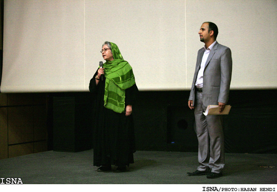
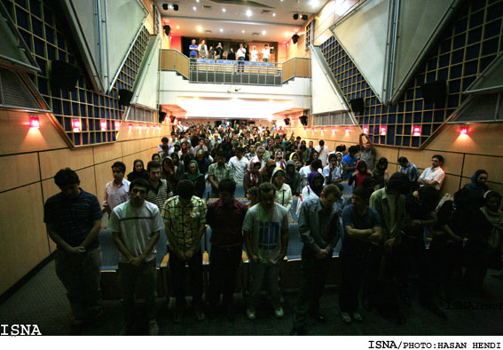
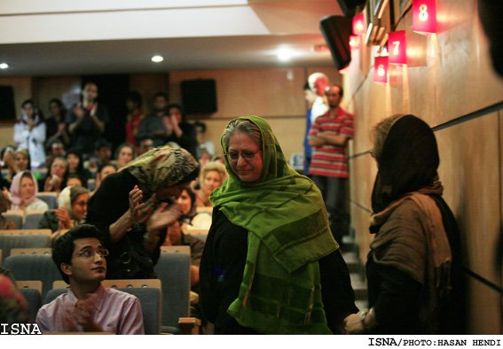

|
|
رخشان بنی اعتماد: من فیلمساز شرمنده ام که دوربینم اجازه نیافت آنچه بر مادران و خواهران این سرزمین رفت را ثبت کند
چهار شنبه25 شهریور 1388
بنی اعتماد: در اين روزگار وانفسا ديگر جايي براي سينما كه قرار است آينه تمام نماي جامعه باشد نميماند، چه برسد به اينكه جشني برايش گرفته شود
تغییر برای برابری: رخشان بنی اعتماد کارگردان و فعال جنبش زنان شب گذشته بیست و چهار شهریور ماه پس از نمایش خصوصی فیلم زیر پوست شهر در سینما اریکه ایرانیان، گفت: "امسال خانواده ی سینما برخلاف سنت هر ساله ی خود روز ملی سینما را جشن نگرفت. من فیلمساز شرمنده ام که در این شرایط دوربینم اجازه نیافت تا تصویر واقعیت این دوران و آن چه بر مادران و همسران این سرزمین رفته است را به تصویر بکشد".
در این برنامه که جمعی از فعالان جنبش زنان و مادران عزادار از جمله مادران شهید ندا آقا سلطان، شهید اشکان سهرابی و شهید سهراب اعرابی و خانواده ی آنان و همچنین خانواده ی برخی از زندانیان وقایع بعد از انتخابات حضور داشتند، رخشان بنی اعتماد با شال سبزی که به نشانه ی همبستگی با جنبش سبز ایران بر سر داشت گفت: "به حرمت داغ دل طوبی ها و همه ی مادران این سرزمین و از آن جایی که طوبی دلش می خواست از آن عکس گرفته شود و نتوانستم این کار را انجام دهم و به احترام همه مادران داغدیده یک دقیقه سکوت اعلام می کنم".
با وجود اطلاع رسانی محدود اکران خصوصی فیلم زیر پوست شهر با استقبال مواجه شد و علاوه بر این که به دلیل تکمیل ظرفیت سالن تعدادی امکان حضور در برنامه را نیافتند بسیاری به صورت ایستاده در این برنامه شرکت کردند. همچنین در انتهای این مراسم حاضرین که قیام کرده بودند، با بالا بردن دستان خود به علامت پیروزی و اهدای گل به مادران داغدار شهدای حوادث پس از انتخابات به آنان ادای احترام کردند.
عکس: ایسنا


